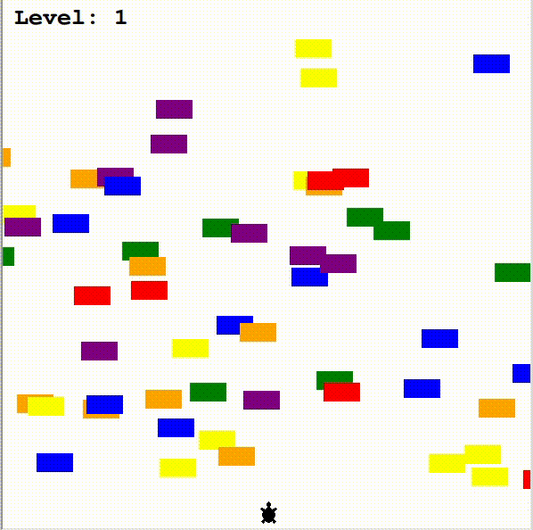

Let's explore the relation between movie budget and box office revenue using Pandas, Matplotlib, Seaborn and Scikit-learn libraries in Python. A lot of data cleaning and visualisation will be conducted and estimated revenues will be calculated given the listed investments of movies.
This project is about building logistics regression model to predict diabetes status in patients based on their medical history and demographic information with the aid of Pandas and Scikit-learn libraries in Python.

This project will investigate whether there are related patterns between Bitcoin price and its Google Search Trend using Pandas and Matplotlib libraries in Python.
This project is about employing Power BI to explore and gain insight into different datasets and visualise the insight with dashboards.

This project will explore Covid data between the beginning of 2020 and mid-2021 using SQL and Tableau to find out some statistical patterns that provide insight into pandemic's situations in each and every country.
This project will use Beautiful Soup library to pull out data from Tiki website and employ smtp library to send email containing the extracted data automatically.

This project is about employing Excel so as to gain insight into the dataset regarding Adidas Sales in the US and then creating an associated dashboard.

This project is a Mini-Game in Python, following OOP and using the Turtle module. The goal of this game is to help a turtle to cross the street.